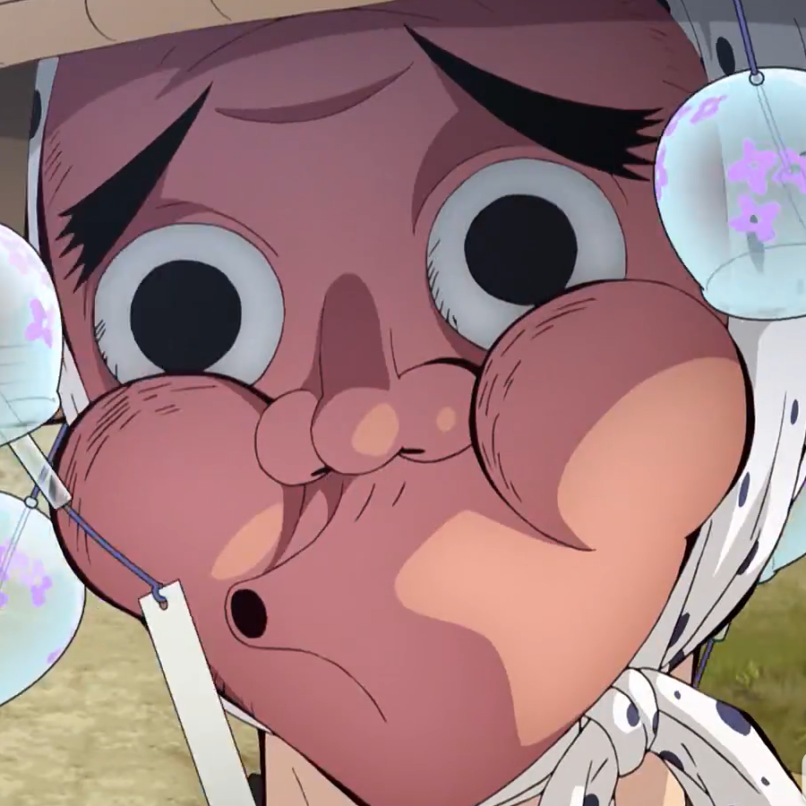

鋼鐵塚螢（はがねづか ほだる Haganezuka Hodaru）
- 配音 : 浪川大輔（日本）；黃天佑（台灣）；瞳音（中國大陸）；Robbie Daymond（美國）；李家傑（Viu）、（TVB）（香港）
-
鬼殺隊的煉刀師。37歲。戴著斗笠，斗笠上掛著好幾個風鈴的怪異男子，斗笠下戴著火男面具，面具下的真面目十分帥氣。性格死板，不聽別人說話而自顧自地講話。身為炭治郎的煉刀師，一旦知道炭治郎把刀弄斷或搞丟，就會生氣地拿菜刀追殺他（而且每次菜刀數量都會增加）。但其實很感謝炭治郎不曾因為他的怪脾氣而更換刀匠，每次炭治郎的刀子斷掉就會跑進深山鍛鍊，希望能打一把更好的刀給他。
一出生就患有癲癇，所以自小脾氣暴躁難以管教，2歲時，快要被搞到精神分裂的父母將他交由鐵珍村長照顧，「螢」是村長替鋼鐵塚取的名字，雖然村長認為這名字很可愛，但鋼鐵塚很不喜歡甚至會因此大發脾氣。只有風鈴能夠讓他情緒平穩。
窩在山裡修行後，人變得很壯。弱點是胳肢窩，被撓了後會躺平一陣子。煉刀師之村篇中，專注於修復打磨藏在「緣壹零式」中的刀，就算被玉壺攻擊，還是以讓人難以置信的專注力修復刀。面具在被攻擊時裂開毀損。
特別喜歡吃御手洗糰子，將「緣壹零式」中的刀修復後交給炭治郎時，要求炭治郎要一直給他送糰子慰問。漫畫單行本最終話和附錄透露後代開了一家名為「鋼鐵塚整備」的修理店。
在第二回人氣投票結果中，以277票獲得第30名。